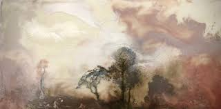
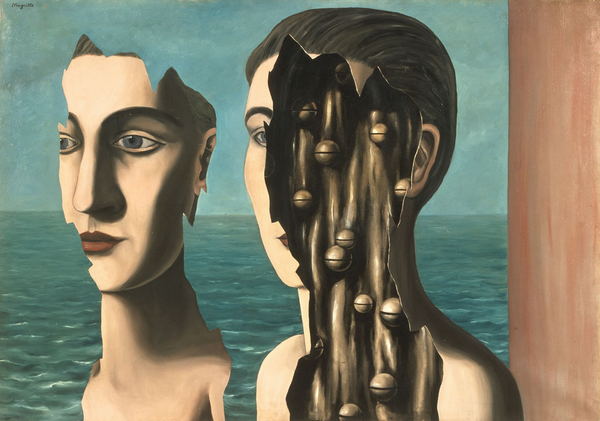
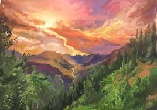
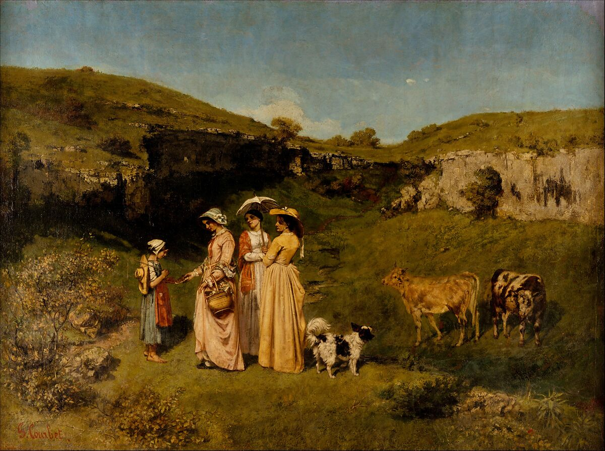

Encaustic paints are one of the oldest types of art paint and have been around since the 1st century. These are made using wax which is colored with pigments and needs to be heated before you can use them. They are often suitable for painting on wooden surfaces, but can also be used on canvas. Encaustic is a water-repellant paint and therefore cannot be mixed with water. Once you heat your pigment, you will either need some metal tools or a brush to apply it. You would again need to heat the entire painting upon completion so that the paint fuses with the surface. If you want to add more layers, you will need to add heat so that the new layer fuses with the previous one.
For more details, visit this page.
Surrealism is an art and cultural movement that developed in Europe in the aftermath of World War I in which artists aimed to allow the unconscious mind to express itself, often resulting in the depiction of illogical or dreamlike scenes and ideas
For more details,visit this page.
Gua sha (pronouced "gwa-shah") is an East Asian healing technique. A trained professional uses a small, smooth-edged tool to firmly stroke your skin in one direction. This can help improve blood flow and reduce inflammation.Gouache is similar to watercolor in that it can be rewetted and dried to a matte finish, and the paint can become infused into its paper support. It is similar to acrylic or oil paints in that it is normally used in an opaque painting style and it can form a superficial layer. Many manufacturers of watercolor paints also produce gouache, and the two can easily be used together.
For more details, visit this page.
Realism, in the arts, the accurate, detailed, unembellished depiction of nature or of contemporary life. Realism rejects imaginative idealization in favour of a close observation of outward appearances. As such, realism in its broad sense has comprised many artistic currents in different civilizations. In the visual arts, for example, realism can be found in ancient Hellenistic Greek sculptures accurately portraying boxers and decrepit old women.
For more details, visit this page.